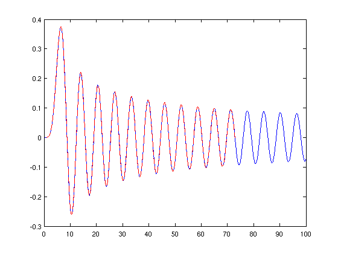
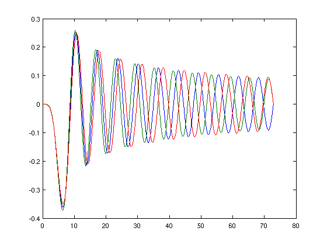
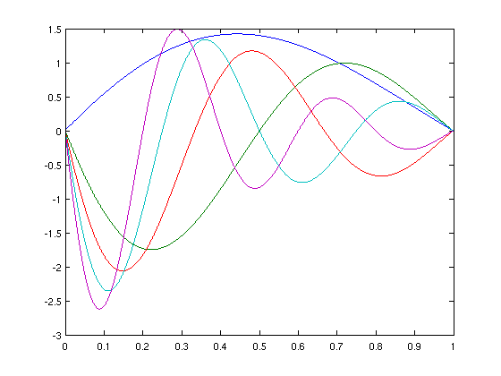

Polynomial eigenproblems with differential operators
Stefan Güttel, 30 August 2011
Contents
(Chebfun example ode-eig/PolyEigDiff.m)
Bessel functions as eigenvectors of polynomial eigenvalue problems
The eigenfunctions of polynomial eigenvalue problems with differential operators can often be interpreted as solutions of certain differential equations. Our first example is the differential equation
x^2*y''(x) + x*y'(x) + (x^2-alpha^2)*y(x) = 0,
which is satisfied by the Bessel functions. We may easily verify this with Chebfun by looking at the residual norm of this equation for the Bessel functions of the first kind of orders alpha = 0,...,5:
dom = [0 100]; x = chebfun(@(x) x, dom); for alpha = 0:5, y = chebfun(@(x)besselj(alpha,x),dom); r = x.^2.*diff(y,2) + x.*diff(y,1) + (x.^2 - alpha^2).*y; fprintf('%d %4.2e\n',alpha,norm(r)) end;
0 4.31e-10 1 4.64e-10 2 5.14e-10 3 5.09e-10 4 6.12e-10 5 6.02e-10
Let's consider, say, the Bessel function of order alpha = 5 and compute its roots on [0,100];
alpha = 5; bessel5 = chebfun(@(x)besselj(alpha,x),dom); rts = roots(bessel5);
We may reformulate the above differential equation into a polynomial eigenvalue problem: Between two of its roots, each Bessel function is (up to scaling) an eigenvector with homogeneous Dirichlet boundary values associated with the eigenvalue 1 of the polynomial eigenvalue problem:
lambda^2*x^2*y'' + lambda*x*y' + (x^2-alpha^2)*y = 0
Using the POLYEIGS command of Chebfun, we can verify this assertion numerically on the domain given by the, say, 1st and 22nd root of our Bessel function:
dom = [rts(1),rts(22)];
A = chebop(@(x,y) (x.^2 - alpha^2).*y, dom);
B = chebop(@(x,y) x.*diff(y), dom);
C = chebop(@(x,y) x.^2.*diff(y,2), dom);
C.bc = 'dirichlet';
[V,D] = polyeigs(A,B,C,1,1);
D
D =
1.0000
We may compare the exact Bessel function of order 5 with the computed eigenvector V (after rescaling):
LW = 'linewidth'; lw = 1.6; plot(bessel5,LW,lw) dd = diff(dom); s = bessel5(dd)/V(dd); hold on plot(s*V,'r--',LW,lw); hold off norm(s*V-bessel5{dom(1),dom(2)})
ans = 4.6966e-10
We could also compute further eignmodes and eigenfunctions of this operator (although we don't claim that they have much physical relevance in this case!).
[V,D] = polyeigs(A,B,C,3,1); D plot(V,LW,lw)
D =
1.0000
0.9540
1.0506
 Accuracy of polynomial eigenvalues
To check the accuracy of the polynomial eigensolver of Chebfun, we consider the following linear ordinary differential equation
lambda^2*c*y''(x) + lambda*b*y'(x) + a*y(x) = 0, y(0) = y(1) = 0.
We compute, say, 5 eigenvalues lambda closest to 1 of the associated polynomial eigenvalue problem:
dom = [0 1]; a = 4; b = 1; c = 2;
A = chebop(@(y) a*y, dom);
B = chebop(@(y) b*diff(y), dom);
C = chebop(@(y) c*diff(y,2), dom);
C.bc = 'dirichlet';
[V,D] = polyeigs(A,B,C,5,1);
This is what the eigenvectors look like:
figure plot(V,LW,lw)
and here is the norm of the quasimatrix whose columns are the residuals of the computed eigenvectors:
norm(A*V + B*V*diag(D) + C*V*diag(D)^2)
ans = 1.6907e-11
Because the problem is linear, the eigenvalues are known exactly and can be compared to the computed ones, which turn out to be pretty accurate:
d = sqrt(b^2 - 4*a*c)/(2*a);
k = (1:5)';
lambda = 2*d./(k*pi*1i);
format long
[ lambda , D ]
norm((D - lambda)./lambda,inf)
ans =
0.443068610157647 0.443068610157302
0.221534305078824 0.221534305078944
0.147689536719216 0.147689536719202
0.110767152539412 0.110767152539402
0.088613722031530 0.088613722031539
ans =
7.802932591980787e-13